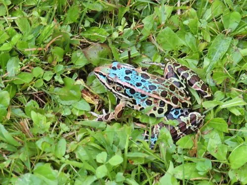

两栖动物 · 动物界
北方豹蛙 Lithobates pipiens

北美洲常见的蛙类，背部布满豹纹状黑斑，善跳跃和游泳，是北美湿地与草原生态系统中常见的捕食者。
- 分类
- 门脊索动物门纲两栖纲目无尾目科蛙科属蛙属
- 栖息环境
- 北美洲的草原、湿地、农田与池塘、沼泽附近
- 地理分布
- 北美洲中部和东部的草原与湿地地区
- 保护级别
- IUCN 无危（LC）；非中国原产，在中国无保护级别
物种志
北方豹蛙体长 5–11 厘米，雌蛙大于雄蛙，背部呈绿褐或黄褐色，上面分布着深褐色的椭圆形斑点，每个斑点常镶有浅色边缘，形似豹纹，“豹蛙”之名由此而来；腹部白色，体侧有明显的背侧褶，后肢长而有力，趾间蹼发达。
它分布于北美洲的草原、湿地、农田和森林边缘，栖息于池塘、沼泽和溪流附近，白天躲在水边草丛中，夜间捕食昆虫、蜘蛛、蚯蚓、小鱼和同类幼蛙。每年 3–6 月繁殖，雌蛙产卵 3000–6000 枚，卵块漂浮在水面，约 1–2 周孵化，蝌蚪经 2–3 个月变态。它是北美地区常见的实验动物和教学用蛙，野外种群总体稳定，被列为无危物种；在中国它属于外来物种，不可随意放生。
形态与习性
- 食性昆虫、蜘蛛、蚯蚓、小鱼和同类幼蛙
- 体长5–11 cm，雌蛙较大
- 寿命约 5–8 年
- 繁殖卵生，每次 3000–6000 枚，约 1–2 周孵化
- 活动节律夜行性，白天躲在水边草丛
- 特点背部豹纹状黑斑，善跳跃和游泳
趣味知识
- 北方豹蛙背部布满豹纹状黑斑，是北美最常见的蛙类之一。
- 它曾被大量用作生物学实验和教学材料，是经典的实验动物之一。
- 北方豹蛙在北美分布广泛，但在中国属于外来物种，不可随意放生。